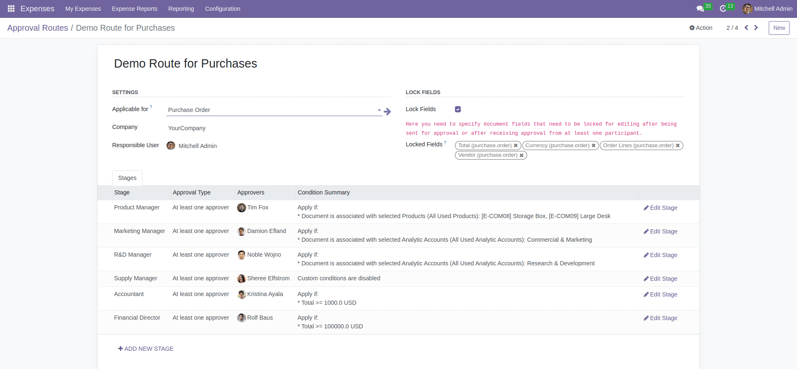
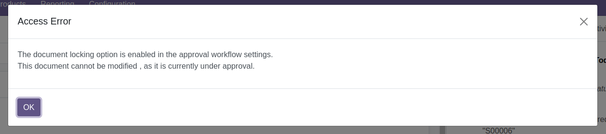
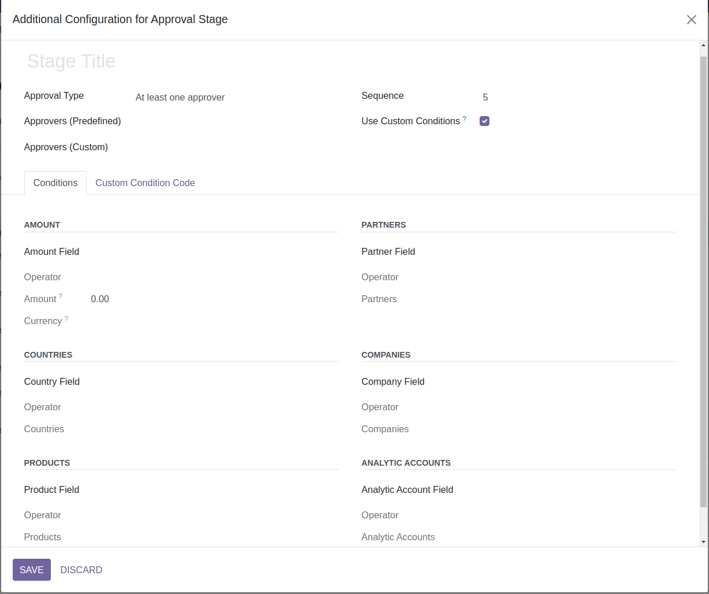
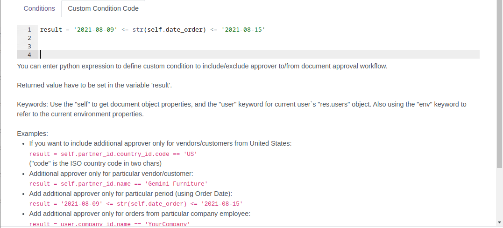

Here is some example of PO approval route:
There are 6 stages in this approval route. But only the "Supply Manager" stage was added without any
custom conditions. It means that the supply manager is responsible for approving all purchase orders
initiated using this approval route.

For other employees to approve a purchase order, specific conditions must be met:
- Product Manager: The Product Manager should approve the purchase order if it
contains particular products in the order lines.
- Marketing Department Manager: The Marketing Department Manager should approve the
purchase order if the order lines are associated with the analytic account "Commercial & Marketing."
- R&D Department Manager: The R&D Department Manager should approve the purchase
order if the order lines are associated with the analytic account "Research & Development."
- Accountant: The Accountant should approve purchase orders with a total amount equal
to or greater than 1000 USD.
- Financial Director: The Financial Director will be requested to approve purchase
orders with a total amount equal to or greater than 100,000 USD.
As you have noticed, the conditions are highly flexible, allowing for the coverage of various business
requirements for the approval system. Additionally, this is not an exhaustive list of conditions; the
route generation can be further customized based on various criteria as needed.
Selective Field Locking
The Selective Field Locking functionality allows users to designate specific document fields that will
remain locked for changes after the document has been sent for approval or has received approval from at
least one participant.
If user tries to change document, he/she will see error message.

Creating Approval Workflow
To create a new approval workflow, follow these steps:
- Enter a name for the workflow.
- Select the data model for which this workflow will be applied.
- Specify the users responsible for managing and keeping this workflow up-to-date.
- Add approval stages
Adding Approval Stage
To add a new stage you need to click "Add New Stage".
Here is how the form looks like:

Stage Title
Name for approval stage
Approval Type
There are two options available: "At least one approver" and "All approvers."
-
"At least one approver" implies that approval from a minimum of one person is sufficient to consider
the approval stage as completed.
-
"All approvers" requires that the document must receive approval from all approvers assigned to the
approval stage for it to be considered fully approved.
Approvers (Predefined)
Here a predefined approval role can be selected.
Approvers (Custom)
This field is to specify custom approvers for the stage. If there is no predefined role, you can select
any user as approver. Please do not forget to grant user access to the associated module. Also, here you
can select multiple users.
The option to select multiple users who can approve a document offers several advantages in managing the
approval process:
Vacation or Leave Coverage: If one of the designated approvers is on vacation or leave, another
authorized approver from the selected group can handle the approval. This ensures that the document
approval process remains uninterrupted even in the absence of certain users.
Shared Responsibility: By spreading the responsibility among multiple employees, the burden of approvals
can be distributed more evenly. This not only helps prevent bottlenecks but also promotes a more
efficient and timely approval workflow.
Having this feature in place adds flexibility and resilience to the approval system, contributing to
smoother operations and improved collaboration within the organization.
Amount
In this settings group, you can choose the field containing the monetary amount and specify the
condition under which an approval stage will be added to the document.
Partners
Here, you can choose the field containing partner and select partners and specify a condition for adding
an approval stage to the document based on whether it is associated with, or not associated with, the
chosen partners.
Countries
Here, you can choose the field containing country and select countries and specify a condition for
adding an approval stage to the document based on whether it is associated with, or not associated with,
the chosen countries.
Companies
Here, you can choose the field containing company and select companies and specify a condition for
adding an approval stage to the document based on whether it is associated with, or not associated with,
the chosen companies
Products
That group of settings is to choose the field containing product(s) and select products and specify a
condition for adding an approval stage to the document based on whether it is associated with, or not
associated with, the chosen products.
Analytic Accounts
That group of settings is to choose the field containing analytic account(s) and select accounts and
specify a condition for adding an approval stage to the document based on whether it is associated with,
or not associated with, the chosen accounts
Custom Condition Code
You have the option to enter a Python expression to define a custom condition for including or excluding
an approver from the document approval workflow. This allows for greater flexibility and customization
in the approval process based on specific business requirements.

As you've surely noticed, our module offers a multitude of capabilities to craft a truly dynamic and
flexible approval route for your documents. Unleash the power of seamless document approvals with our
feature-rich solution, tailored to optimize efficiency and collaboration. Experience the next level of
approval workflows today!